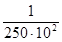

МИНИСТЕРСТВО СТРОИТЕЛЬСТВА ПРЕДПРИЯТИЙ НЕФТЯНОЙ И ГАЗОВОЙ ПРОМЫШЛЕННОСТИ
Всесоюзный научно-исследовательский институт по строительству магистральных трубопроводов
ИНСТРУКЦИЯ
ПО ПРОЕКТИРОВАНИЮ
МАГИСТРАЛЬНЫХ ТРУБОПРОВОДОВ
В СЕЙСМИЧЕСКИХ РАЙОНАХ
ВСН 2-137-81
Миннефтегазстрой
МОСКВА 1982
В Инструкции приведены требования и рекомендации по проектированию магистральных стальных трубопроводов, в частности по вопросам установления расчетной сейсмичности, по методам расчета и выбору конструктивных решений.
Инструкция предназначена для специалистов, занимающихся вопросами проектирования и строительства трубопроводов, прокладываемых в сейсмических районах.
Инструкцию разработали: чл.-корр. АН ГССР Ш.Г. Напетваридзе (ИСМиС АН ГССР); кандидаты технических наук А.С. Гехман, В.В. Спиридонов и Н.Г. Фигаров (ВНИИСТ); инженер Ю.В. Рождественский (ВЗПИ).
|
Министерство строительства предприятий нефтяной и газовой промышленности |
Ведомственные строительные нормы |
ВСН 2-137-81 Миннефтегазстрой |
|
Инструкция по проектированию магистральных трубопроводов в сейсмических районах |
Разработано впервые |
|
Внесена ВНИИСТом и ИСМиС АН ГССР |
Утверждена Миннефтегазстроем 18 декабря 1981 г. Согласовано Госстроем СССР № 1-2311 10 ноября 1981 г. |
Срок
введения |
1.1. Настоящая Инструкция разработана в дополнение к действующей главе СНиП «Магистральные трубопроводы. Нормы проектирования».
1.2. Требования настоящей Инструкции должны соблюдаться при проектировании линейной части новых и реконструируемых трубопроводов и ответвлений от них условным диаметром до 1400 мм (включительно) с избыточным давлением среды не выше 10 МПа (100 кгс/см2) в районах с повышенной сейсмичностью, включая районы распространения вечномерзлых грунтов.
1.3. При проектировании трубопроводов, помимо требований настоящей Инструкции, необходимо соблюдать требования главы СНиП «Строительство в сейсмических районах. Нормы проектирования».
1.4. Основной задачей обеспечения сейсмостойкости трубопроводов является предотвращение повреждений конструкций, вызывающих нарушение режима их эксплуатации. Разрешается при соответствующем технико-экономическом обосновании проектирование трубопроводов и их элементов с учетом возникновения остаточных деформаций (смещении участков трубопроводов, деформаций или трещин в опорных конструкциях и т.д.) от действия сейсмических сил.
1.5. Сейсмостойкость трубопроводов следует обеспечивать:
выбором благоприятных в сейсмическом отношении участков трасс;
прочностью и устойчивостью конструкций, подтвержденных соответствующими расчетами или специальными исследованиями;
применением рациональных конструктивных решений;
высоким качеством строительно-монтажных работ.
1.6. Конструкцию трубопровода - вид прокладки (подземную, наземную или надземную) и возможную систему компенсации продольных перемещений выбирают в зависимости от следующих факторов: диаметра трубопровода, давления транспортируемого продукта, температурного режима строительства и эксплуатации трубопровода, рельефа местности, а также инженерно-геологических, гидрологических и сейсмических условий районов прохождения трассы с учетом прогноза изменения этих условий в процессе строительства и эксплуатации трубопровода.
1.7. Силу землетрясения в районе или пункте строительства следует определять по картам сейсмического районирования СССР или по списку основных населенных пунктов СССР, расположенных в сейсмических районах в соответствии с главой СНиП «Строительство в сейсмических районах».
1.8. Уточнение сейсмичности площадки строительства в зависимости от геологических условий (отличающихся от средних, принятых при составлении карты районирования) производят на основании карт сейсмического микрорайонирования, осуществляемого в соответствии со специальной инструкцией и требованиями, приведенными в разделе 2 настоящей Инструкции.
При разработке технического проекта в случае отсутствия карт сейсмического микрорайонирования допускается производить уточнение сейсмичности района в зависимости от грунтовых условий в соответствии с табл. 1 СНиП II-7-81.
1.10. Степень ответственности трубопровода следует учитывать путем введения в расчет конструкций коэффициента К0, зависящего от характеристики сооружения и определяемого в соответствии с табл. 1.
Таблица 1
Значения коэффициента К0, учитывающего ответственность трубопровода
|
Характеристика трубопровода |
Значение коэффициента К0 |
|
|
1 |
Газопроводы при рабочем давлении от 2,5 до 10,0 МПа (25 - 100 кгс/см2) включительно; нефтепроводы и нефтепродуктопроводы при условном диаметре от 1000 до 1200 мм. Газопроводы вне зависимости от величины рабочего давления, а также нефтепроводы и нефтепродуктопроводы любого диаметра, обеспечивающие функционирование особо ответственных объектов. Переходы магистральных трубопроводов через водные преграды с шириной по зеркалу воды в межень 25 м и более |
1,5* |
|
2 |
Газопроводы при рабочем давлении от 1,2 до 2,5 МПа (12 - 25 кгс/см2); нефтепроводы и нефтепродуктопроводы при условном диаметре от 500 до 800 мм |
1.2 |
|
3 |
Газопроводы при рабочем давлении ниже 1,2 МПа (12 кгс/см2) и нефтепроводы при условном диаметре менее 500 мм |
1,0 |
* При сейсмичности площадки 9 баллов и выше коэффициент К0 для трубопроводов, указанных в п. 1, умножается дополнительно на коэффициент 1,5.
1.11. Отнесение участков газопроводов, нефтепроводов и нефтепродуктопроводов к категории трубопроводов, обеспечивающих функционирование ответственных объектов, эксплуатация которых не должна прекращаться во время землетрясений, утверждается Госстроями республик или соответствующими министерствами и ведомствами.
1.12. Расчетную сейсмичность подземных магистральных трубопроводов и параметры сейсмических колебаний грунта следует принимать равными сейсмичности на поверхности земли без учета заглубления трубопровода.
1.13. При выборе трассы трубопроводов следует избегать участки с неустойчивыми и просадочными грунтами, пересечения территорий горных выработок, активных тектонических разломов, селеопасные и оползневые склоны, а также участки, где возможно развитие карстовых процессов.
2.1. Корректировку сейсмичности участков трассы магистральных трубопроводов, отводов от них и других площадок строительства в зависимости от геологических, гидрогеологических, геокриологических и геоморфологических условий следует производить по результатам сейсмического микрорайонирования, осуществляемого согласно специальной инструкции.
2.2. При проведении сейсмического микрорайонирования необходимо уточнить данные о тектонике, общей сейсмичности участков строительства и сильных землетрясениях прошлых лет, а также геологические, гидрогеологические и другие сведения, обосновывающие интенсивность проявления землетрясений в этом районе. Исследования следует проводить вдоль всего опасного участка трассы в коридоре, границы которого отстоят от трубопровода не менее чем на 15 км.
2.3. Геологические, гидрогеологические, геокриологические и геоморфологические данные берут за основу для разделения изучаемых участков, примыкающих к трассе трубопровода, на зоны со сходными условиями, а также для выбора пунктов, в которых необходимо производить измерения колебаний грунтов в соответствии с инструментальным методом сейсмического микрорайонирования.
2.4. При проведении сейсмического микрорайонирования на участках, расположенных на крутых склонах гор и в других районах со сложным рельефом, необходимо учитывать возможность возникновения остаточных деформаций от сейсмических воздействий. Основными типами повреждений и разрушений склонов и насыпей при сейсмических воздействиях являются: оползание склонов, обвалы, оседание насыпей, появление трещин и явления, сопутствующие разжижению грунтов.
2.5. При установлении сейсмичности участков трассы следует учитывать возможное изменение свойств грунтового основания в процессе строительства и эксплуатации трубопровода, в том числе изменение температурного режима и растепление или замерзание окружающего трубопровод грунта, обводнение участков трассы и т.п.
2.6. В результате проведения сейсмического микрорайонирования должны быть составлены карта сейсмического микрорайонирования заданных участков трассы трубопровода с выделением зон сейсмичности, а также отчет о проделанных исследованиях с обоснованием выделения зон различной балльности.
2.7. При отсутствии материалов по сейсмическому микрорайонированию трассы трубопровода допускается по согласованию с утверждающей проект инстанцией корректировать сейсмичность площадки строительства на основании общих инженерно-геологических и гидрогеологических изысканий согласно табл. 1 СНиП II-7-81 «Строительство в сейсмических районах».
2.3. При выборе трассы трубопроводов следует обходить участки, сейсмичность которых превышает 9 баллов. Прокладка трубопроводов на таких участках трассы может быть осуществлена в случае особой необходимости при соответствующем технико-экономическом обосновании и согласовании с инстанциями, утверждающими проект. При этом в проекте должны быть предусмотрены дополнительные антисейсмические мероприятия.
3.1. При проектировании магистральных трубопроводов для сейсмических районов в соответствии с действующими главами строительных норм и правил расчет следует производить по предельным состояниям первой группы (по потере несущей способности или полной непригодности к эксплуатации).
3.2. Расчет магистральных трубопроводов с учетом сейсмических воздействий, как указано в приложении, следует выполнять в таком порядке:
установить сейсмичность трассы;
выбрать расчетную схему трубопровода и отдельных конструкций для расчета на основные и особые сочетания нагрузок с учетом сейсмических воздействий;
произвести расчет на основные сочетания нагрузок, установить основные конструктивные решения;
определить сейсмические нагрузки;
произвести расчет на особые сочетания нагрузок (с учетом сейсмических);
уточнить принятые ранее конструктивные решения, выбранные сечения элементов конструкций и т.д.
3.3. Трубопроводы, предназначенные для прокладки в сейсмических районах, вне зависимости от способа прокладки (подземного, наземного или надземного), рассчитывают на основные и особые сочетания нагрузок с учетом сейсмических воздействий в соответствии с требованиями глав СНиП «Проектирование магистральных трубопроводов. Нормы проектирования» и «Нагрузки и воздействия».
3.4. При расчете на особые сочетания нагрузок с учетом сейсмических все расчетные нагрузки (кроме сейсмических) умножают на коэффициенты сочетаний nc, принимаемые в соответствии с табл. 2 настоящей Инструкции. При этом сейсмические нагрузки должны быть приняты без снижения их значения.
Таблица 2
Значения коэффициентов сочетаний nc
|
Нагрузки и воздействия |
Способ прокладки трубопроводов |
Значения коэффициента nc |
|||
|
подземный или наземный в насыпи |
наземный открытый |
надземный (на опорах) |
|||
|
Постоянные |
Собственный вес трубопровода и обустройств |
+ |
+ |
+ |
1,0 |
|
Воздействия предварительного напряжения трубопровода (упругий изгиб и др.) |
+ |
+ |
+ |
1,0 |
|
|
Давление грунта |
- |
- |
- |
1,0 |
|
|
Гидростатическое давление воды |
+ |
- |
- |
1,0 |
|
|
Временные |
Внутреннее давление для газопроводов и нефтепроводов вне зависимости от диаметров труб, наличия нефтеперекачивающих насосных станций и подключения емкостей |
+ |
+ |
+ |
0,9 |
|
Масса продукта или воды |
+ |
+ |
+ |
0,9 |
|
|
Температурные воздействия |
+ |
+ |
+ |
0,8 |
|
|
Воздействия неравномерных деформаций грунта, не сопровождающиеся изменением его структуры (просадки, пучение и др.) |
+ |
+ |
+ |
0,5 |
|
|
Кратковременные |
Снеговая нагрузка Гололедная нагрузка Ветровая нагрузка |
Не учитываются в случаях, если эти нагрузки не являются основными |
|||
|
Нагрузки и воздействия, возникающие при испытании трубопровода |
|||||
|
Нагрузки и воздействия, возникающие при пропуске очистных устройств |
|||||
|
Особые |
Воздействия селевых потоков и оползней: |
||||
|
а) если их возникновение может произойти одновременно с землетрясением |
+ |
+ |
+ |
1,0 |
|
|
б) в случаях, не соответствующих п. «а» |
Не учитываются |
||||
|
Воздействие деформаций земной поверхности в районах горных выработок и в карстовых районах: |
|||||
|
а) если их возникновение может произойти одновременно с землетрясением |
+ |
+ |
+ |
1,0 |
|
|
б) в случаях, не соответствующих п. «а» |
Не учитываются |
||||
|
Воздействие деформаций грунта, сопровождающихся изменением его структуры: |
|||||
|
а) при сейсмических воздействиях (например, разжижение грунтов) |
+ |
+ |
+ |
1,0 |
|
|
б) в других случаях |
Не учитываются |
||||
Примечание. Знак плюс (+) означает, что нагрузки и воздействия учитываются, знак минус (-) - не учитываются.
3.5. Магистральные стальные трубопроводы, опорные конструкции и другие элементы с учетом требований главы СНиП на проектирование в сейсмических районах следует рассчитывать:
на условные статические нагрузки, определяемые с учетом сейсмического воздействия. При этом величины усилий или напряжений в трубопроводе или элементах его конструкций (определенных в предположении упругой работы конструкций) не должны превышать предельных значений, регламентированных для этих конструкций и соответствующих материалов;
на сейсмические нагрузки, определяемые на основании акселерограмм, велосиграмм и сейсмограмм*, получаемым на основании анализа записей, осуществленных сейсмическими станциями во время прошлых землетрясений в районе строительства или в аналогичных по сейсмическим условиям местностях. Величины максимальных ускорений αс, принимаемые для расчета, должны быть не менее указанных в табл. 3.
* Акселерограмма, велосиграмма, сейсмограмма - соответственно записи сейсмических ускорений, скоростей и смещений грунта, развернутые во времени.
Таблица 3
Сейсмические ускорения колебаний частиц грунта
|
Сила землетрясения, баллы |
7 |
8 |
9 |
10 |
|
Сейсмическое ускорение αс, см/с2 |
100 |
200 |
400 |
800 |
3.6. В качестве расчетной схемы надземного трубопровода при расчете на сейсмические воздействия следует принимать многопролетную балку кольцевого сечения, имеющую криволинейные вставки (компенсационные участки и углы поворота трассы). При этом следует рассматривать следующие случаи:
сейсмические силы направлены вдоль продольной оси трубопровода; при этом необходимо определять смещения сечений трубопровода, напряжения в нем, в том числе вызываемые взаимным смещением опор, а также нагрузки на опоры;
сейсмические силы направлены поперек продольной оси трубопровода в плоскости опорной поверхности; при этом следует определять нагрузки на опоры, а также величины смещения трубопровода и длины ригелей опор, при которых не произойдет сброса трубопровода о ригеля;
сейсмические силы действуют в вертикальной плоскости; при этом следует определять дополнительные напряжения в трубопроводе и нагрузки на опоры, вызываемые инерционными сейсмическими нагрузками и неравномерными осадками опор (также связанными с сейсмическими воздействиями).
Опоры надземного трубопровода следует рассчитывать как стойки, опирающиеся на грунтовое основание или погруженные в его толщу, в верхней части которых сосредоточена масса, равная сумме масс двух примыкающих к этой опоре полупролетов трубопровода. Характер взаимодействия опор и трубопровода, а также реакции компенсационных участков и компенсаторов следует определять в зависимости от выбранной системы компенсации, размеров и расстояния между компенсаторами или компенсационными участками, от конструкции опор и опорных частей (наличия роликовых ходовых частей, характеристики материала контактных поверхностей и т.д.) и с учетом возможного изменения сил сопротивления перемещению трубопровода на опорах вследствие сейсмического воздействия.
3.7. В качестве расчетной схемы наземного открытого трубопровода при расчете на сейсмические воздействия следует принимать бесконечную балку кольцевого сечения, имеющую криволинейные вставки (компенсационные участки и углы поворота трассы) и опирающуюся на грунтовое основание. Сейсмические силы действуют вдоль продольной оси трубопровода и вызывают дополнительные смещения и напряжения в трубопроводе.
3.8. В качестве расчетной схемы подземного и наземного трубопроводов в насыпи при расчете на сейсмические воздействия следует рассматривать бесконечную балку кольцевого сечения, окруженную грунтом (с различной степенью защемления трубопровода в грунте). Дополнительные напряжения в трубопроводе, связанные с распространением сейсмической волны вдоль оси трубопровода, вызваны напряженным состоянием грунтовой среды.
При проектировании наземного трубопровода в насыпи дополнительно следует проверять устойчивость ее откосов при сейсмических воздействиях.
Сечение подземного или наземного в насыпи трубопровода на действие сейсмических сил, направленных по нормали к продольной оси трубопровода, проверять не следует, за исключением случаев пересечения трубопроводами диаметром более 1000 мм границ участков с различными грунтовыми условиями, где возможны отличные по величине осадки, а также при жестком закреплении трубопровода в местах подключения к различным сооружениям, аппаратам и установкам.
3.9. Сейсмические нагрузки на надземные трубопроводы и их опоры и на наземные открытые (без обвалования грунтом) трубопроводы следует определять так же, как для обычных наземных сооружений в соответствии с главой СНиП на строительство в сейсмических районах. При этом для получения расчетной нагрузки найденная величина сейсмической нагрузки должна быть умножена на соответствующий коэффициент К0, приведенный в табл. 1 настоящей Инструкции.
3.10. Период собственных колебаний надземных трубопроводов, необходимый для определения коэффициента динамичности в соответствии с требованиями главы СНиП на строительство в сейсмических районах и для расчета конструкций, следует определять как период собственных колебаний для неразрезных балок (с учетом массы трубы и транспортируемого продукта, распора компенсационных участков или компенсаторов, конструктивных особенностей опор трубопровода и других факторов).
3.11. Взаимное смещение опор надземных трубопроводов вдоль продольной оси при сейсмических воздействиях Δl (см) следует определять по формуле
Δl = ±0,04K0KпαсT0lCp-1, (1)
где K0 - коэффициент ответственности сооружения (определяют в соответствии с п. 1.9 и по табл. 1);
Kп - коэффициент повторяемости землетрясений (определяют в соответствии с п. 3.14);
αс - сейсмическое ускорение (определяют с учетом требований п. 3.5), см/с2;
T0 - преобладающий период сейсмических колебаний грунтового массива, определяемый при изысканиях (см. п. 2.6), с. При отсутствии необходимых данных разрешается принимать T0 = 1 с;
l - расстояние между опорами, находящимися одновременно в зоне сжатия или растяжения, см;
Cp - скорость распространения продольной сейсмической волны вдоль продольной оси трубопровода. Скорость распространения сейсмических волн в грунтовом массиве определяют при изысканиях; на стадии технического проекта допускается принимать скорость распространения продольных сейсмических волн в соответствии с табл. 4.
Таблица 4
Ориентировочные значения скоростей распространения продольных сейсмических волн Cp и коэффициентов защемления трубопроводов в грунте m
|
Скорость распространения сейсмических продольных волн Cp, км/с |
Коэффициент защемления m |
|
|
Насыпные грунты, рыхлые пески, супеси, суглинки и другие неводонасыщенные |
0,12 |
0,50 |
|
Песчаные грунты маловлажные (сухие) |
0,15 |
0,50 |
|
Песчаные грунты средней влажности |
0,25 |
0,45 |
|
Песчаные грунты водонасыщенные (со значительным содержанием в порах грунта защемленного воздуха) |
0,35 |
0,45 |
|
Супеси и суглинки |
0,30 |
0,60 |
|
Глинистые грунты влажные, пластичные |
0,50 |
0,35 |
|
Глинистые грунты плотные, полутвердые и твердые |
2,00 |
0,70 |
|
Лёсс и лёссовидные грунты |
0,40 |
0,50 |
|
Торфяной грунт |
0,10 |
0,20 |
|
Низкотемпературные мерзлые грунты (песчаные, глинистые, насыпные) |
2,20 |
1,00 |
|
Высокотемпературные мерзлые грунты (песчаные, глинистые, насыпные) |
1,50 |
1,00 |
|
Гравийные, щебенистые и галичниковые породы |
1,10 |
См. п. 2 примечания |
|
Известняки, сланцы, песчаники нарушенные |
1,50 |
То же |
|
Скальные породы ненарушенные |
2,20 |
-"- |
Примечания: 1. В табл. 4 приведены наименьшие значения Cp. Значения Cp должны уточняться при изысканиях.
2. Значения коэффициентов защемления трубопровода m следует принимать по грунту засыпки.
3.12. Напряжения от сейсмических нагрузок в подземных или наземных в насыпи трубопроводах, направленные вдоль продольной оси трубопровода, σтр, (кН/см2 или кгс/см2) следует определять по формуле
σтр = ±0,04mK0KпαсEтрT0Cp-1, (2)
где m - коэффициент защемления трубопровода в грунте, определяемый в соответствии с табл. 4 и п. 3.13;
Eтр - модуль упругости материала трубопровода; для стального трубопровода Eтр = 2,1 · 104 кН/см2 или 2,1 · 106 кгс/см2.
Примечание. В тех случаях, когда толщина стенки трубопровода, полученная при расчете на статические нагрузки, будет недостаточна при учете сейсмических напряжений, необходимо предусмотреть конструктивные мероприятия, снижающие величину сейсмических напряжений и обеспечивающие сохранение толщины стенки, установленной при расчете трубопровода на статические нагрузки.
Увеличивать толщину стенки трубопровода при учете сейсмических воздействий следует лишь в тех случаях, когда снижение сейсмических напряжений в результате применения других мероприятий невозможно или экономически нецелесообразно.
3.13. Коэффициент m, учитывающий защемление трубопровода в грунте, следует принимать по табл. 4.
При выборе значения коэффициента m необходимо учитывать возможные изменения состояния окружающего трубопровод грунта в процессе эксплуатации сооружения.
3.14. Значения коэффициента повторяемости землетрясений или сооружений, рассчитываемых по первой группе предельных состояний, следует принимать по табл. 5.
Таблица 5
Значения коэффициента повторяемости землетрясений Кп
|
1 раз в 100 лет |
1 раз в 1000 лет |
1 раз в 10000 лет |
|
|
Коэффициент повторяемости |
1,15 |
1,0 |
0,9 |
4.1. Все монтажные сварные соединения стальных магистральных трубопроводов, прокладываемых в сейсмических районах, должны подвергаться контролю физическими методами вне зависимости от категории магистрального трубопровода или его участка, устанавливаемой в соответствии с главой СНиП «Магистральные трубопроводы. Нормы проектирования».
4.2. Следует избегать применения на магистральных трубопроводах в сейсмических районах сложных соединительных узлов, жестких соединений трубопроводов различных направлений или жестких соединений трубопроводов со стенами зданий и сооружений, а также с оборудованием.
В местах подсоединения трубопроводов к трубопроводам других направлений или к оборудованию и сооружениям необходимо предусмотреть устройство криволинейных вставок, компенсационных участков или компенсаторов, размеры и компенсационная способность которых должны устанавливаться расчетом.
Допускается подсоединение нефте- и продуктопроводов в резервуары через компенсационные устройства, обеспечивающие необходимые перемещения трубопровода.
Ввод трубопровода в различные технологические здания (в компрессорные, насосные и т.д.) должен осуществляться через проем, размеры которого должны превышать диаметр трубопровода не менее чем на 40 см. При этом ось трубопровода должна проходить через центр проема.
4.3. Увеличивать толщину стенок трубопроводов, прокладываемых в сейсмических районах, с учетом напряжений, определяемых по формуле (2) настоящей Инструкции, следует только в тех случаях, когда нельзя достигнуть снижения напряжений в трубопроводе за счет устройства компенсационных участков, гибких вставок и т.д.
4.4. При пересечении трубопроводом участков трассы с грунтами, характеризующимися резко отличными друг от друга сейсмическими свойствами, необходимо предусмотреть возможность свободного перемещения трубопровода.
При подземной прокладке трубопровода на таких участках следует устраивать траншею с пологими откосами, а засыпку трубопровода производить крупнозернистым песком, торфом и т.п.
4.5. На участках пересечения трассой трубопровода активных тектонических разломов необходимо применять надземную прокладку.
4.6. При подземной прокладке трубопровода грунтовое основание трубопровода (дно траншеи) должно быть тщательно уплотнено.
4.7. Не следует увеличивать заглубление трубопровода с целью повышения его сейсмостойкости.
4.8. Крутизна откосов насыпей вокруг трубопровода в сейсмических районах должна быть уменьшена по сравнению с крутизной откосов для несейсмических районов не менее чем на 20 %.
При формировании насыпи вокруг трубопровода и основания под трубопровод из насыпного грунта необходимо производить послойное уплотнение отсыпаемого грунта.
4.9. При устройстве полок в горных районах, а также выемок на пересеченных участках трассы необходимо выбрать крутизну откосов, обеспечивающую их устойчивость при сейсмических воздействиях.
4.10. Конструкции опор надземных трубопроводов должны обеспечивать возможность перемещения трубопроводов при изменении температуры трубы и давления транспортируемого продукта и в то же время воспринимать усилия, возникающие во время землетрясения. Для достижения этих целей следует использовать конструкции, в которых предусмотрено включение дополнительных связей (резное увеличение сил сопротивления перемещению, включение демпфирующих устройств и т.д.) при сейсмических воздействиях.
4.11. Для гашения колебаний надземных трубопроводов следует предусматривать в каждом пролете установку демпферов, которые не препятствовали бы перемещениям трубопровода при изменении температуры трубы и давления транспортируемого продукта.
4.12. При проектировании, строительстве и эксплуатации магистральных трубопроводов следует предусматривать в проектах и обеспечивать как в период строительства, так и в период эксплуатации отвод воды от трубопровода и по возможности не допускать обводнения и заболачивания трассы.
4.13. На наиболее опасных участках трассы (участках с динамически неустойчивыми грунтами, в местах, где возможны большие осадки или смещения грунтового массива и т.д.) необходимо предусмотреть автоматическую систему контроля и отключения аварийных участков трубопровода.
5.1. При сооружении магистральных трубопроводов в сейсмических районах необходимо организовать контроль за выполнением всех требований соответствующих глав СНиП и раздела 4 настоящей Инструкции.
5.2. В процессе строительства трубопровода необходимо организовать проведение работ по уточнению инженерно-геологических условий трассы и возможного их изменения в результате строительства трубопровода. В случае резкого отклонения инженерно-геологических условий от принятых в проекте следует приостановить строительные работы для внесения в проект необходимых изменений.
5.3. На наиболее сложных участках трубопроводов диаметром более 1000 мм, на переходах через крупные реки и другие сложные препятствия в районах, где сейсмичность трассы 9 баллов и более, необходимо предусмотреть установку инженерно-сейсмометрических станций для записи колебаний трубопровода и окружающего грунтового массива во время землетрясения.
5.4. Общий порядок проектирования и установки сейсмометрических приборов и оборудования на инженерно-сейсмометрических станциях регламентируется «Инструкцией по организации станций инженерно-сейсмометрической службы для регистрации колебаний зданий и сооружений при землетрясениях», разработанной межведомственным советом по сейсмологии и сейсмостойкому строительству (МСССС) при президиуме АН СССР.
5.5. Расходы на установку и эксплуатацию сейсмометрической аппаратуры должны быть предусмотрены сметой на эксплуатацию трубопровода.
I. Найти величину напряжений в подземном трубопроводе диаметром 1200 мм и стенкой толщиной 18 мм, вызванных сейсмическим воздействием силой 8 баллов.
Трубопровод предназначен для транспорта газа при рабочем давлении 75 кгс/см2 (7,5 МПа).
Трасса трубопровода проложена в грунтах, состоящих из мелких и пылеватых песков.
Сейсмичность трассы трубопровода следует принимать в соответствии с данными сейсмического микрорайонирования. При отсутствии этих карт допускается производить уточнение сейсмичности района по табл. 1 главы СНиП II-7-81.
Для участков трассы, сложенных мелкими и пылеватыми песками, приращение сейсмичности согласно табл. 1 главы СНиП II-7-81 составляет 1 балл. Следовательно, сейсмичность участков трассы трубопровода будет равна 9 баллам.
Степень ответственности сооружения учитывается в расчетах путем введения коэффициента К0, определяемого в соответствии с пп. 1.9. и 1.10 настоящей Инструкции,
К0 = 1,5 · 1,5 = 2,25.
Напряжения от сейсмических нагрузок определяем согласно п. 3.11 по формуле (2).
Коэффициент защемления трубопровода в грунте m согласно табл. 4 для песков равен 0,5.
Коэффициент повторяемости землетрясении Кп принимают согласно табл. 5 равным 0,9.
Сейсмическое ускорение αс определяют по табл. 3; для землетрясений силой 9 баллов αс = 400 см/с2.
Модуль упругости для стального трубопровода Етр = 2,1×106 кгс/см2.
Скорость распространения продольных сейсмических волн Cр определяют по табл. 4. Для песчаных грунтов скорость распространения продольных сейсмических волн составит 250 м/с.
T0 - преобладающий период сейсмических колебаний, в данном примере принимаемый равным 1,0 с.
Дополнительные напряжения от сейсмического воздействия, действующие вдоль продольной оси трубопровода, в соответствии с формулой (2) будут равны
σтр =
±0,04mK0KпαсEтрT0Cp-1= +0,04 · 0,5 · 2,25 · 0,9 · 400 ·
2,1 · 106 · 1 · 
Полученные величины напряжений от сейсмических воздействий должны учитываться как дополнительные статические при расчете трубопровода по главе СНиП «Магистральные трубопроводы. Нормы проектирования». В соответствии с п. 4.3 настоящей Инструкции увеличивать толщину стенки трубы следует лишь в тех случаях, когда не удается конструктивными мероприятиями снизить величину продольных сейсмических напряжений.
II. Рассматривается надземный трубопровод. Требуется найти величину относительного смещения двух смежных опор на прямолинейном участке надземного трубопровода, проложенного в районе с расчетной сейсмичностью 9 баллов.
Рабочее давление в трубопроводе 75 кгс/см2 (7,5 МПа), расстояние между смежными опорами l равно 50 м.
Грунтовые условия аналогичны грунтовым условиям предыдущего примера. Значения коэффициентов K0, Kп и величин αс, T0 и Cр принимаем такими же, как и в примере 1.
Взаимное смещение смежных опор надземных трубопроводов вдоль продольной оси определяют согласно формуле (1)
Δl = ±0,04K0KпαсT0lCp-1 = ±0,04 · 2,25 · 0,9 · 400 · 1 · 50 · 102 · @ ±6,5 см.
Аналогично может быть найдено взаимное смещение двух ближайших неподвижных опор, на которых трубопровод закреплен, если они одновременно находятся в зоне сжатия или растяжения (длины зон сжатия или растяжения будут равны длине полуволны). При этом в формулу (1) вместо l = 50 м следует подставлять величину расстояния между неподвижными опорами.
Компенсационный участок должен быть рассчитан с учетом дополнительных продольных перемещений, вызванных сейсмическими воздействиями.
СОДЕРЖАНИЕ